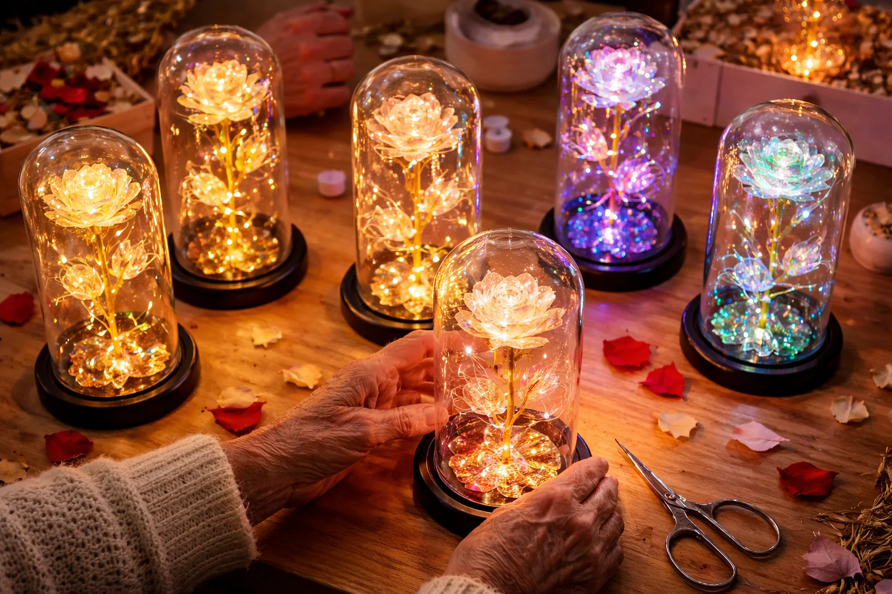

Egy 74 éves bretagne-i kézművesnő kiárusítja világító örök rózsa készleteit műhelye végleges bezárása előtt
Levél Colette Hervé-től, az örök rózsák alkotójától, Vannes

Vannes – A 74 éves Colette Hervé 2026. február 28-án fejezi be tizenkét éves kézműves tevékenységét. A kikötő közelében lévő 22 m²-es műhelyében utoljára csomagolja munkáit: üvegbura alatti világító rózsákat, melyeket fáradt kezeivel egyenként rakott össze.
A bezárás oka? Gyorsan romló látás, kézremegés és egy test, amely már nem engedelmeskedik. „A szemorvosom hónapok óta könyörgött, hogy hagyjam abba” – vallja be könnyes szemmel. „Azt mondta, ha nem hagyom abba, maradandó látáskárosodást szenvedek. Igaza volt.”
Mielőtt végleg lehúzná a rolót, a kézművesnő kiárusítja **utolsó 489 rózsáját.** Ez a végelszámolás nem egy egyszerű kereskedelmi akció: egy olyan szerelmi történet vége, amely egész Bretagne-t megmozgatta.
„Azt akartam, hogy az utolsó munkáim még Valentin-nap előtt gazdára találjanak” – magyarázza. „Hogy utoljára még megvilágítsák a szerelmet, ahogy azt 12 éven át tették.”

A tragédia, amivel minden kezdődött: amikor a rózsa fénnyé válik
2013. december. André Hervé, Colette férje, 47 év házasság után elhunyt. Agresszív daganat. Colette egyedül maradt a házban, ahol minden szeglet az ő hiányára emlékeztette.
„Az éjszaka az ellenségemmé vált. A csend és a sötétség az ürességre emlékeztetett” – meséli. Minden megváltozott egy este, amikor unokája, Léa, félve a sötéttől, egy kislámpát kért. Colette egy fényfüzért tekert egy textilrózsa köré, amelyet André ajándékozott neki évekkel korábban.
„Nagyi, ez pontosan úgy néz ki, mint a rózsa a Szépség és a Szörnyetegből!” – kiáltott fel a kislány. Így született meg az „Örök Rózsa” ötlete, amely úgy világít a sötétben, mint a szeretet jelzőfénye.

Évi 387 rózsa, kézzel összeállítva a műhely fényében
Minden szirmot kézzel vágnak ki speciális gyöngyházfényű papírból, majd óvatosan felmelegítik, hogy természetes ívet kapjon. Egyetlen rózsa elkészítése 4-5 órát vesz igénybe. „A testem nemet mondott” – összegzi Colette. „És ezúttal hallgatnom kell rá.”

Rendkívüli szolidaritási hullám
Ahogy a bezárás híre elterjedt, a vásárlók a segítségére siettek. Colette úgy döntött, hogy az utolsó darabokat féláron értékesíti, hogy méltósággal zárhassa be a műhelyt. „Ez a tökéletes Valentin-napi ajándék. Valami, ami 20 évig világítani fog, amikor a virágbolti virágok már rég elhervadtak.”
Vásárlói vélemények
✅ Nathalie és Marc, 28 éve házasok, Brest
⭐⭐⭐⭐⭐
„A férjemtől kaptam a 20. évfordulónkra. Az éjjeliszekrényemen áll, és minden este meggyújtom. Ez a rituálénk. Most rendeltem egyet a lányomnak is az esküvőjére.”
✅ Christine, 56 éves, Párizs
⭐⭐⭐⭐⭐
„Anyukámnak adtam a 80. születésnapjára. Egyedül él, és ez a rózsa azt az érzést kelti benne, mintha lenne vele valaki. Ez a legszebb ajándék, amit adhattam neki.”
✅ Emilie, 34 éves, Lyon
⭐⭐⭐⭐⭐
„Nehéz időszakon mentem keresztül, és egy barátnőm adta ezt a rózsát, hogy mindig legyen fényem a sötétségben. Ez a kis lámpa valóban segített. Köszönöm, Colette.”
Az utolsó 489 példány – a szenvedély öröksége
Minden rózsa egyedi. Amint ezt a 489 darabot eladják, a műhely örökre bezár. **Minden február 10-ig leadott rendelés megérkezik Valentin-nap előtt.**
